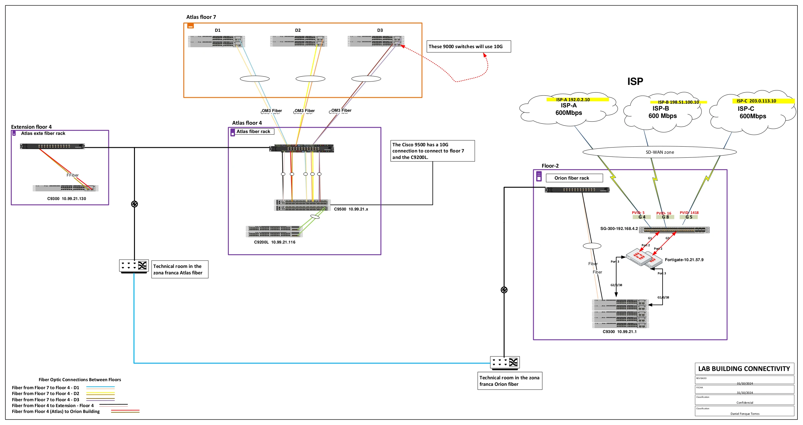

Campus Floor Connectivity Design
Expanding an operating campus: retaining the FortiGate 600-series HA edge, adding C9500 distribution, reusing OM3 fiber infrastructure, and extending C9300 access across two buildings.

On This Design
Design Context
This project was an expansion of an operating campus network. The FortiGate 600-series HA firewalls were already in place; the work focused on extending connectivity, upgrading distribution, and integrating new access switches with existing infrastructure. In this public version, I use Orion and Atlas as fictional building names and replace provider names and public IP addresses in the original plan with examples.
Orion Floor 2 housed the WAN handoff and a five-switch C9300 StackWise stack on the trusted side of the firewalls. At Atlas, an existing fiber rack on Floor 4 became the connection point for the new C9500 distribution pair, the Floor 7 access groups, and a separate Floor 4 extension. The C9500s took over the distribution role previously served by C9200-series switches, which were retained downstream for access.
I put particular care into how the new switching would fit the existing fiber plant. A contractor installed the fiber links, and their routing and endpoint mapping had to be checked on site. That coordination mattered as much as the logical topology: a redundant line on a drawing is only useful when the actual patching and failure domains support it.
Hardware Inventory and Roles
The inventory below follows the original drawing and my implementation context. It separates existing equipment from the expansion work and distinguishes device counts from representative diagram symbols.
| Location / Role | Platform | Quantity / Scope | Implementation Context |
|---|---|---|---|
| Orion Floor 2 - WAN handoff | Cisco SG300 | Existing aggregation switch | Carries ISP handoffs to the firewall WAN interfaces; it is upstream of the C9300 campus stack. |
| Existing security edge | FortiGate 600-series HA | Existing firewall pair | Retained for firewall policy and SD-WAN; this project did not introduce a new firewall platform. |
| Orion Floor 2 - trusted switching | Cisco C9300 StackWise | 5 switches in one stack | Campus-side connectivity after the firewalls. StackPower was not deployed. |
| Atlas Floor 4 - distribution | Cisco C9500 pair | 2 new switches | Took over distribution from the C9200-series equipment; linked using the StackWise Virtual architecture described below. |
| Atlas Floor 4 - retained access | Cisco C9200L | Existing equipment, shown as a pair in the source | Reused downstream after the distribution upgrade; distinct from the new C9500 pair. |
| Atlas Floor 7 - access | Cisco C9300 | 12 switches total across D1, D2 and D3 | The original icons were representative; the installed floor total is 12 switches. |
| Atlas Floor 4 extension | Cisco C9300 access | Separate extension block | Connected through the extension fiber handoff; not the five-switch stack on Orion Floor 2. |
| Fiber infrastructure | OM3 multimode fiber and patching racks | Existing Floor 4 rack plus interconnections | Inter-building, Floor 4-to-Floor 7, and Floor 4 extension connectivity. |
Detailed Material Reference
The material reference below captures the equipment and media involved in the expansion. Exact optic and interface selections belong in the implementation port schedule; generic device artwork is not a module specification.
| Component | Role in This Expansion | Design Consideration |
|---|---|---|
| C9300 StackWise | Data stacking for the five-switch Floor 2 block | StackWise and StackPower are separate technologies. Data stacking remained in use without shared stack power. |
| C9500 distribution pair | Redundant campus distribution on Floor 4 | The inter-switch link, dual-active detection, and downstream uplinks serve different functions. |
| OM3 fiber | Campus interconnections shown in the source plan | Match optics to fiber type, measured distance, loss budget, and supported interfaces. |
| 10G campus links | The original design calls for 10G toward the Floor 7 C9300 groups | Both endpoints must have compatible 10G interfaces and optics. |
| Retained C9200L access | Reuse of existing switching | The source artwork labels 4x1G uplinks. Such an interface remains 1G even when its peer is a C9500. |
Switch Port and Uplink Plan
The port plan follows the traffic boundary: ISP transport first, firewall policy next, and trusted campus switching after that. Fiber racks are passive patching points, not forwarding devices.
| Connection | Port / Link Role | Operational Detail |
|---|---|---|
| ISP services to SG300 | WAN handoffs | Keep each service in its intended WAN VLAN and document its firewall interface mapping. |
| SG300 to FortiGate HA | Firewall WAN connectivity | The original plan shows the ISP aggregation switch ahead of the firewalls. |
| FortiGate to Orion C9300 stack | Trusted LAN handoff | Connects the security edge to campus switching. The diagram shows physical connections; the LACP proposal is discussed separately under future improvements. |
| Orion Floor 2 to Atlas Floor 4 | OM3 inter-building connectivity | Trace both endpoints through the technical rooms and patching infrastructure. |
| Atlas C9500 pair to Floor 7 | OM3 uplinks for D1, D2 and D3 | The plan shows paired connections for each group and calls for 10G campus uplinks. |
| Atlas C9500 pair to retained C9200L | Downstream access connectivity | Negotiate a supported speed at both endpoints; do not label a 1G-only C9200L port as 10G. |
| Atlas Floor 4 to Floor 4 extension | Local extension over fiber | Separate from the Orion Floor 2 stack and from the Floor 7 access groups. |
Specific Uplink and Optic Notes
The 10G annotation in the source applies to the new campus uplink design; it should not be read as upgrading every connected device to 10G. The C9200L artwork is specifically labeled with 1G uplinks. I distinguish those links here so the port plan does not overstate their capacity.
| Item | Planning Rule |
|---|---|
| OM3 at 10G | Use a supported multimode optic, such as 10GBASE-SR, within its reach and loss limits. This identifies an appropriate optic class, not an unrecorded installed part number. |
| Retained 1G access links | Use compatible 1G interfaces and optics on both sides. Faster distribution hardware does not change the access port limit. |
| Fiber pairs | Record cable and strand IDs, patch-panel positions, termination points, and the actual route. Two links can share a physical failure domain. |
| Inter-switch links | Document StackWise Virtual links and dual-active detection separately from access and firewall uplinks. |
Design Requirements
Capacity
Expand access capacity while retaining useful existing equipment and allowing for future endpoints.
capacity planning
Resiliency
Use the new distribution pair and redundant uplinks to limit outages, while accounting for shared fiber routes and power constraints.
known failure domains
Security
Preserve segmentation and use access controls suitable for enterprise operations.
least exposure
Operations
Keep the design readable for support teams, audits, troubleshooting, and future changes.
clear handoff
Connectivity Options
The design decision was driven by the need to expand an existing network without replacing every layer. Reusing the firewall edge, the Floor 4 rack, and downstream access equipment kept the scope focused on distribution and connectivity.
| Decision | Benefit | Trade-off |
|---|---|---|
| Retain the existing FortiGate edge | Preserves the established security boundary while expanding the campus behind it. | Existing upstream switching and its failure domains remain part of the service path. |
| Introduce a C9500 distribution pair | Provides a stronger distribution layer and redundant attachment points for access uplinks. | Surviving capacity, inter-switch connectivity, and failover behavior require deliberate design. |
| Reuse the Floor 4 fiber rack and C9200L access equipment | Integrates the expansion with usable infrastructure. | Patching must be verified, and retained interface speeds still constrain individual links. |
| Use C9300 StackWise without StackPower on Floor 2 | Provides one logical data stack with five members. | Budget prevented StackPower deployment, according to the explanation I received. Power must therefore be assessed per switch rather than treated as a shared pool. |
Proposed Architecture
The service path starts with the existing ISP handoffs on Orion Floor 2: ISP services → SG300 WAN aggregation → FortiGate 600-series HA → five-switch C9300 stack → OM3 inter-building connection → Atlas Floor 4 C9500 distribution → campus access. This places the C9300 stack behind the firewalls, not ahead of them. SD-WAN is a logical function on the FortiGate, not a separate physical device.
At Atlas Floor 4, the new C9500 pair took over distribution and connected through the existing fiber rack to the Floor 7 access groups and the Floor 4 extension. Floor 7 contains 12 C9300 switches across D1, D2, and D3. The original drawing uses representative switch icons; the inventory records the actual total so those symbols are not mistaken for a device count.
The C9500 interconnection uses a different architecture from the C9300 rear-panel StackWise stack. StackWise Virtual presents the two C9500 chassis as one logical switch with an active and standby control plane; both chassis can forward traffic. If the active chassis fails, the standby takes over the control-plane role. This is more than copying a configuration: availability also depends on the SVL, dual-active detection, surviving uplinks, and remaining capacity. Cisco's StackWise Virtual guide explains these roles.
Internet traffic follows the firewall path. No WAN VLAN or alternative route should bridge around the FortiGate into trusted campus switching. Traffic routed locally between campus VLANs does not automatically cross the firewall; segments requiring stateful inspection need a forwarding path through it. The security boundary therefore depends on gateway placement and routing as well as the physical topology.
Transceiver and Media Plan
OM3 multimode fiber was used for the interconnections shown in the design. The fiber work was contracted out, and we had to verify how the links were routed and terminated. The existing Atlas Floor 4 rack was the central patching point for Floor 7 and the local extension.
| Path | Media / Intent | What Had to Be Checked |
|---|---|---|
| Orion Floor 2 to Atlas Floor 4 | OM3 inter-building connection through technical rooms | Actual cable route, endpoint mapping, patching, distance, and optical loss. |
| Atlas Floor 4 to Floor 7 | OM3 connections to D1, D2 and D3; 10G in the design | Correct group-to-distribution mapping and whether redundant links share a cable, riser, or conduit. |
| Atlas Floor 4 extension | Fiber connection through the extension rack | Extension endpoints and the handoff back to Floor 4 distribution. |
| C9500 to retained access switching | Media and speed matched to the access interface | Supported optics and common link speed; 1G-only access uplinks remain 1G. |
OM3 does not imply unlimited reach. Optic selection must match the measured path and both platforms. In particular, 10GBASE-LR single-mode optics are not a drop-in replacement for multimode optics on an OM3 run. Labeling and contractor handoff records should make the physical path traceable without relying on the colors in the drawing.
Resiliency Decisions
The distribution upgrade provided two C9500 chassis and redundant connection points, with paired fiber connections for the Floor 7 groups. Equipment redundancy, link redundancy, and physical route diversity need to be assessed separately. The contractor's cable routing and termination work determines whether a single physical incident can affect both connections.
- Distribution failure: StackWise Virtual supports control-plane switchover, while surviving links carry traffic through the remaining chassis. Size those links and the surviving switch for the required failure-state load; switchover alone does not guarantee sufficient bandwidth.
- Uplink redundancy: A port-channel spanning both C9500 chassis is a Multi-Chassis EtherChannel (MEC). Paired physical links are not automatically a MEC: their aggregation and peer configuration must match. Keep the SVL and dual-active detection function distinct from downstream port-channels.
- Fiber failure domains: Two strands or cables on the same route can fail together. A shared conduit, riser, patching point, or technical-room dependency remains a physical single point of failure for the connections using it. Contractor route verification is what establishes the extent of physical diversity.
- Floor 2 power constraint: The five C9300s used StackWise for data, but not StackPower. I was told this was a budget decision. That does not disable data stacking, but it removes shared stack-power capability; PSU and feed redundancy must be evaluated per member.
- Existing WAN dependencies: The FortiGate HA pair remains behind the existing SG300 handoff. Firewall HA does not remove the failure domain of that upstream switch or any shared provider path.
- Operations: Test link loss, distribution-chassis failure, and firewall failover separately. Check reachability, session impact, convergence, interface utilization, and the recovery procedure. Labels and accurate endpoint records shorten fault isolation.
Security and Layer 2 Controls
The expansion retained the existing FortiGate security edge. WAN services terminate on the upstream aggregation layer, and the trusted campus stack sits downstream of the firewalls. Maintaining that separation during the cutover is essential: access growth must not introduce an unintended bypass around the existing policy boundary.
The access design also considered 802.1X, VLAN segmentation, ACLs, storm control, PortFast, and BPDU Guard. These controls have different jobs; a VLAN boundary alone is not stateful inspection.
- 802.1X for authenticated endpoint access.
- Separate VLANs for users, voice, management, cameras, and access-control systems.
- ACLs at the relevant routing boundary for controlled inter-segment access.
- Storm-control thresholds suited to the expected traffic profile.
- PortFast and BPDU Guard on appropriate endpoint-facing ports.
- Document gateway and firewall-policy ownership so troubleshooting follows the actual forwarding path.
Growth Planning
This expansion combined new distribution capacity with reused access equipment and fiber infrastructure. The practical growth plan was to add access where needed while preserving the existing security edge and extending from the Floor 4 rack. The trade-off is that retained access interfaces keep their original limits; a faster distribution layer does not make every downstream link faster.
For the next expansion, I would review free ports, PoE budgets, uplink utilization, spare fiber pairs, and capacity after a chassis or link failure. I would also include the budget for power resilience explicitly. The Floor 2 StackPower decision is a useful reminder that data-plane redundancy and power resilience are separate design choices.
Lessons Learned
- An expansion starts with the infrastructure already in service: firewall placement, access equipment, fiber racks, and operational dependencies.
- A diagram should state device totals explicitly. Representative switch icons must not be read as a procurement count.
- Contracted fiber work still needs engineering verification of routes, terminations, and failure domains.
- StackWise, StackWise Virtual, and StackPower solve different problems; none should be used as shorthand for complete redundancy.
- Reuse can simplify a project, but inherited interface limits and single points of failure remain part of the design.
Design Improvement I Would Apply Today
During the project, I recommended a further phase to strengthen the WAN edge and improve service recovery. The site operated 24/7, and the Change Advisory Board (CAB) and executive leadership did not authorize the proposed production changes. Operational continuity, internal policy, and budget constraints prevented this phase from proceeding. The following describes the design I proposed and how I would refine it today; it was not part of the completed campus expansion.
WAN Aggregation and Firewall Connectivity
The first objective was to replace the existing SG300 WAN aggregation switch, a shared point of failure ahead of the FortiGate HA pair, with a dedicated redundant switching block. ISP handoffs would remain upstream of the firewalls: ISP circuits → isolated WAN aggregation → FortiGate HA → trusted Cisco campus switching. This would preserve a clear security boundary while reducing dependence on a single WAN handoff switch.
My initial cabling proposal called for eight links: four on the WAN side and four on the LAN side. These were separate functional groups, not one eight-member EtherChannel or unidirectional inbound and outbound links. The final allocation across HA units and switch members would need to be documented in the port schedule and validated against interface availability, throughput, and the capacity required after a failure.
Each untagged ISP handoff would use an access port in that provider's VLAN. Trunks toward the firewall would carry only the required tagged WAN VLANs, with matching firewall subinterfaces. A provider delivering a tagged service would need a matching handoff configuration. Separate LAN-side aggregates would connect the firewalls to trusted campus switching; ISP VLANs would not be extended into the core as a path around the firewall.
Each switch-side LACP bundle would terminate on one FortiGate unit. Ports leading to both HA units would not be combined into one EtherChannel. Across a C9300 StackWise stack, this is a cross-stack EtherChannel; across the C9500 StackWise Virtual pair, it is a Multi-Chassis EtherChannel (MEC). LACP negotiates the bundle, while the forwarding hash distributes traffic. A single flow does not normally use the sum of all member speeds. Physical route and power diversity would still need to be addressed separately.
VDOM Separation and Application Policy
I also planned separate FortiGate virtual domains: an Internet VDOM and a VDOM for critical services. Each would have its own interfaces, routing, and security policies, subject to the platform's VDOM support and licensing. Any communication between them would use explicitly controlled inter-VDOM connectivity. This provides logical separation while retaining shared hardware and its associated failure domain.
The policy design included web filtering, application control, and service-specific access rules for selected customer applications. Where supported by the chosen inspection feature, I considered pattern-based matching, including regular expressions. Those rules would need application testing and an appropriate inspection strategy for encrypted traffic; they would complement explicit source, destination, and service controls.
AWS Recovery Option for Critical Services
For critical migrations and selected customer services, I considered an AWS recovery environment connected to the on-premises FortiGate edge through redundant IPsec tunnels. The cloud firewall role would require a virtual appliance such as FortiGate-VM for AWS, rather than a physical FortiGate 600 in AWS. This remained a recovery concept; the cloud service model, appliance sizing, and availability design were not finalized.
AWS Site-to-Site VPN provides two tunnels per connection. Both would need routing and failover configuration. In that model, the tunnels terminate on the AWS VPN gateway service; routing would then steer protected traffic through the cloud firewall before it reaches the EC2 workloads, with a corresponding return path. Tunnels terminated directly on FortiGate-VM would be a different design and would not automatically receive the managed service's two-tunnel arrangement. Two tunnels also do not remove a shared on-premises ISP, device, or power failure.
EC2 workloads would sit in protected subnets behind the inspection path. Security groups would restrict each workload to its required peers and service ports, while subnet network ACLs would provide additional controls. Security groups are stateful; network ACLs are stateless and require explicit return-traffic rules. Firewall policy and VPC routing would need to preserve inspection in both directions, rather than assume that placing a firewall in the VPC makes every flow pass through it. AWS documents the distinction between these controls.
Connectivity alone would not make this a disaster recovery solution. The next design steps would define recovery time and recovery point objectives, data replication and backups, application dependencies, recovery capacity, and tested failover and failback procedures. A production migration would also need an approved change window, rollback criteria, and named operational owners. None of this recovery phase reached implementation or validation because the required policy, budget, and management approvals were not granted.
Illustrative WAN Port-Channel
This Cisco-side template shows one WAN bundle to one FortiGate unit. Replace the interface and VLAN placeholders from the approved port schedule and configure the matching firewall aggregate. The other HA unit and LAN-side connections require separate switch-side bundles. HA behavior and secondary-unit LACP participation must be checked for the selected release; see Fortinet's HA active/passive cluster setup guide.
interface range <approved-member-interfaces>
description TO-FORTIGATE-WAN
switchport mode trunk
switchport trunk allowed vlan <wan-vlan-list>
channel-protocol lacp
channel-group 101 mode active
interface Port-channel101
description TO-FORTIGATE-WAN
switchport mode trunk
switchport trunk allowed vlan <wan-vlan-list>Looking back, I like this design because it reminds me that network architecture is a balance between physical reality, business growth, security, and the people who will operate the network after the deployment is finished.
Comments & Discussion
Notes, improvements, and design trade-off comments are welcome.